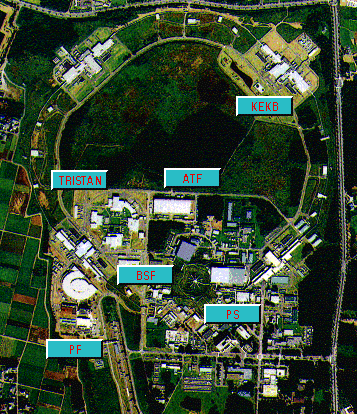

The KEK laboratory, in Japan,
was originally established for the purpose of promoting experimental
studies on elementary particles.
A 12 GeV proton synchrotron was constructed as the
first major facility. Since its commissioning in 1976, the
proton synchrotron played an important role in
boosting experimental activities in Japan and thus laid the foundation of
the next step of KEK's high energy physics program, a 30 GeV
electron-positron colliding-beam accelerator called TRISTAN.

We thank KEK for permission to use their images.